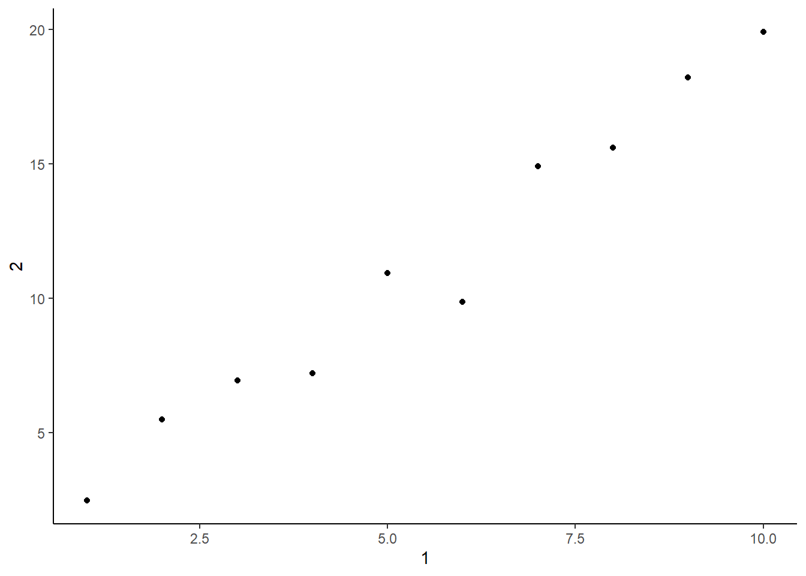

pacman::p_load(readxl, readr, tidyverse)Chapter 7
Chapter 7 of R4DS teaches how to import a variety of file types into R. This page will work through a subset of the chapter’s prompts. I’ll start by loading the tidyverse and a variety of packages to help us read different file types.
7.2.3 Exercises:
Exercise 7.2.3.1
What function would you use to read a file where fields were separated with “|”?
1 answer: this can be done with read_delim(). Firsts, let’s use the sales files in this chapter to create a spreadsheet with fields separated by “|”. Then we can read this file in R using the read_delim() function.
sales_files <- c(
"https://pos.it/r4ds-01-sales",
"https://pos.it/r4ds-02-sales",
"https://pos.it/r4ds-03-sales"
)
sales <- read_csv(sales_files, id = "file", show_col_types = FALSE)
write_delim(sales, file = "./data/sales.csv", delim = "|")
sales_delim <- read_delim(
"./data/sales.csv", delim = "|", show_col_types = FALSE)
sales_delim# A tibble: 19 × 6
file month year brand item n
<chr> <chr> <dbl> <dbl> <dbl> <dbl>
1 https://pos.it/r4ds-01-sales January 2019 1 1234 3
2 https://pos.it/r4ds-01-sales January 2019 1 8721 9
3 https://pos.it/r4ds-01-sales January 2019 1 1822 2
4 https://pos.it/r4ds-01-sales January 2019 2 3333 1
5 https://pos.it/r4ds-01-sales January 2019 2 2156 9
6 https://pos.it/r4ds-01-sales January 2019 2 3987 6
7 https://pos.it/r4ds-01-sales January 2019 2 3827 6
8 https://pos.it/r4ds-02-sales February 2019 1 1234 8
9 https://pos.it/r4ds-02-sales February 2019 1 8721 2
10 https://pos.it/r4ds-02-sales February 2019 1 1822 3
11 https://pos.it/r4ds-02-sales February 2019 2 3333 1
12 https://pos.it/r4ds-02-sales February 2019 2 2156 3
13 https://pos.it/r4ds-02-sales February 2019 2 3987 6
14 https://pos.it/r4ds-03-sales March 2019 1 1234 3
15 https://pos.it/r4ds-03-sales March 2019 1 3627 1
16 https://pos.it/r4ds-03-sales March 2019 1 8820 3
17 https://pos.it/r4ds-03-sales March 2019 2 7253 1
18 https://pos.it/r4ds-03-sales March 2019 2 8766 3
19 https://pos.it/r4ds-03-sales March 2019 2 8288 6Exercise 7.2.3.2
Apart from file, skip, and comment, what other arguments do read_csv() and read_tsv() have in common?
2 answer: according to the help text, all arguments are the same between these two commands, such as col_names, col_types, col_select, ID, etc. We just use read_csv() vs read_tsv() when importing comma delimited files vs. tab delimited files, respectively.
#?read_csv
#?read_tsvExercise 7.2.3.3
What are the most important arguments to read_fwf()?
3 answer: the most important arguments include file and col_positions. col_positions specifies the width of the fields. Options are fwf_empty(), which guesses width based on the positions of empty columns; fwf_widths(), where you supply the width of columns; fwf_positions(), where you supply paired vectors of start and end positions; and fwf_cols(), where you supply named arguments of paired start and end positions/column widths.
#?read_fwfExercise 7.2.3.4
Sometimes strings in a CSV file contain commas. To prevent them from causing problems, they need to be surrounded by a quoting character, like ” or ’. By default, read_csv() assumes that the quoting character will be “. To read the following text into a data frame, what argument to read_csv() do you need to specify?
4 answer: utilize the quote argument
read_csv("x,y\n1,'a,b'", quote = "\'", show_col_types = FALSE)# A tibble: 1 × 2
x y
<dbl> <chr>
1 1 a,b Exercise 7.2.3.5
Identify what is wrong with each of the following inline CSV files. What happens when you run the code?
5 answer: see each tab below
#original
suppressWarnings(
read_csv("a,b\n1,2,3\n4,5,6", show_col_types = FALSE)
)# A tibble: 2 × 2
a b
<dbl> <dbl>
1 1 23
2 4 56#revision: there was one fewer column than needed; fix this by adding ", c" below
read_csv("a,b,c\n1,2,3\n4,5,6", show_col_types = FALSE)# A tibble: 2 × 3
a b c
<dbl> <dbl> <dbl>
1 1 2 3
2 4 5 6#original
suppressWarnings(
read_csv("a,b,c\n1,2\n1,2,3,4", show_col_types = FALSE)
)# A tibble: 2 × 3
a b c
<dbl> <dbl> <dbl>
1 1 2 NA
2 1 2 34#revision: there was one fewer column than needed; fix this by adding ", d" below. Also we can quiet a warning message by adding two commas after the first 2 to indicate missing values
read_csv("a,b,c,d \n1,2,,\n1,2,3,4", show_col_types = FALSE)# A tibble: 2 × 4
a b c d
<dbl> <dbl> <dbl> <dbl>
1 1 2 NA NA
2 1 2 3 4#original
read_csv("a,b\n\"1", show_col_types = FALSE)# A tibble: 0 × 2
# ℹ 2 variables: a <chr>, b <chr>#revision: add a backslash before last quote so that both quotes surrounding 1 have an escape; then add second quote after 1" to close the quotes for the entire string. Lastly, set quote argument equal to ""
read_csv("a,b\n\"1\",", quote = "", show_col_types = FALSE)# A tibble: 1 × 2
a b
<chr> <lgl>
1 "\"1\"" NA #original
read_csv("a,b\n1,2\na,b", show_col_types = FALSE)# A tibble: 2 × 2
a b
<chr> <chr>
1 1 2
2 a b #revised: I'm unclear what the issue is that the authors are highlighting but my guess is that you likely don't need the 2nd row with values matching variable names
read_csv("a,b\n1,2", show_col_types = FALSE)# A tibble: 1 × 2
a b
<dbl> <dbl>
1 1 2#original
read_csv("a;b\n1;3", show_col_types = FALSE)# A tibble: 1 × 1
`a;b`
<chr>
1 1;3 #revised: use read_csv2 which is for files where fields are delimited with semicolons instead of commas
suppressMessages(
read_csv2("a;b\n1;3", show_col_types = FALSE)
)# A tibble: 1 × 2
a b
<dbl> <dbl>
1 1 3Exercise 7.2.3.6
Practice referring to non-syntactic names in the following data frame by:
6 answer: see each tab below
Extracting the variable called 1.
tibble(
`1` = 1:10,
`2` = `1` * 2 + rnorm(length(`1`))
) %>%
select(1)# A tibble: 10 × 1
`1`
<int>
1 1
2 2
3 3
4 4
5 5
6 6
7 7
8 8
9 9
10 10Plotting a scatterplot of 1 vs. 2.
tibble(`1` = 1:10,
`2` = `1` * 2 + rnorm(length(`1`))) %>%
ggplot(aes(.[[1]], .[[2]])) +
geom_point() +
theme_classic() +
labs(x = 1,
y = 2)Warning: Use of `.[[1]]` is discouraged.
ℹ Use `.data[[1]]` instead.Warning: Use of `.[[2]]` is discouraged.
ℹ Use `.data[[2]]` instead.
Creating a new column called 3, which is 2 divided by 1.
tibble(
`1` = 1:10,
`2` = `1` * 2 + rnorm(length(`1`)),
`3` = `2` / `1`)# A tibble: 10 × 3
`1` `2` `3`
<int> <dbl> <dbl>
1 1 0.833 0.833
2 2 4.02 2.01
3 3 5.63 1.88
4 4 7.31 1.83
5 5 10.6 2.12
6 6 11.7 1.95
7 7 14.4 2.05
8 8 16.0 2.00
9 9 18.1 2.01
10 10 21.9 2.19 Renaming the columns to one, two, and three.
tibble(
`1` = 1:10,
`2` = `1` * 2 + rnorm(length(`1`)),
`3` = `2` / `1`) %>%
rename(
one = `1`,
two = `2`,
three = `3`)# A tibble: 10 × 3
one two three
<int> <dbl> <dbl>
1 1 2.04 2.04
2 2 4.10 2.05
3 3 6.67 2.22
4 4 7.73 1.93
5 5 10.1 2.02
6 6 12.2 2.03
7 7 13.4 1.91
8 8 18.3 2.29
9 9 16.9 1.87
10 10 18.9 1.89